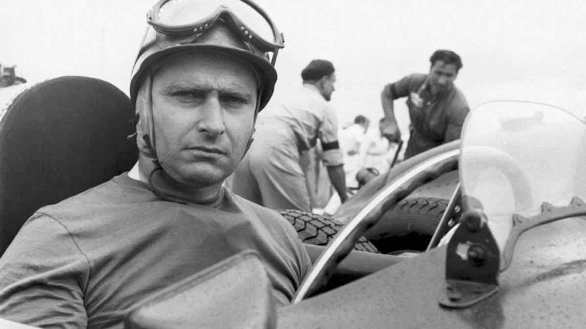
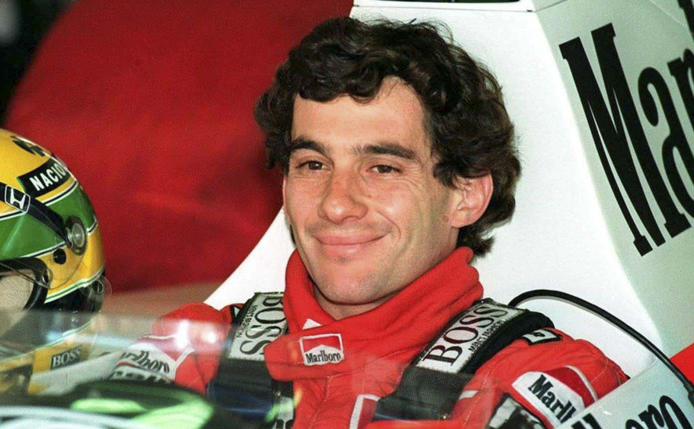
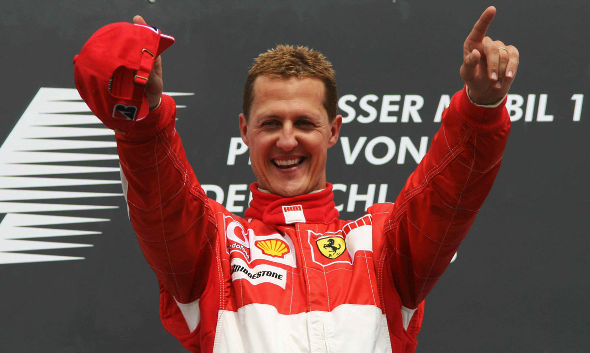
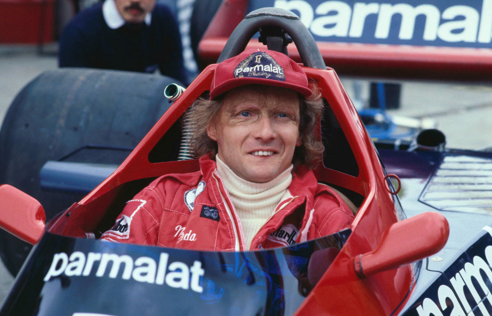
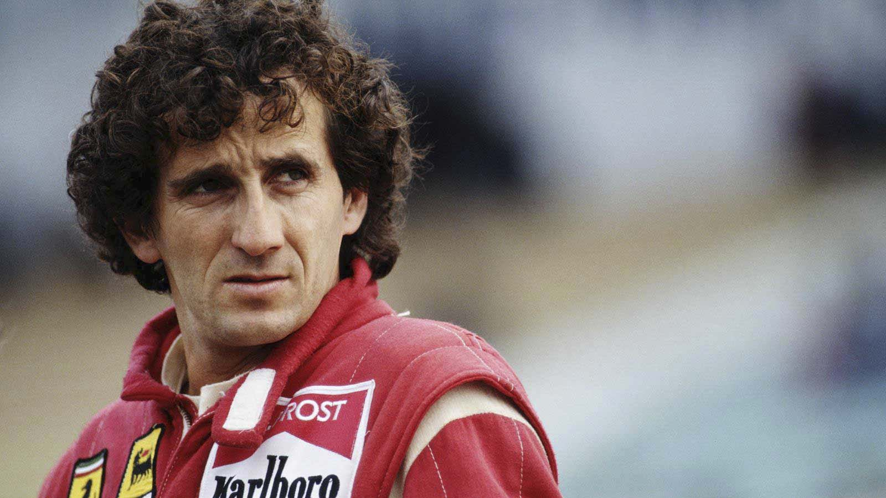

GRANDES LEYENDAS DE LA FORMULA 1
Juan Manuel Fangio
Juan Manuel Fangio (Balcarce, Argentina; 24 de junio de 1911 - Buenos Aires, Argentina; 17 de julio de 1995) fue un piloto de automovilismo argentino. Es considerado por los especialistas como uno de los más destacados pilotos profesionales del automovilismo mundial de todos los tiempos, por haber logrado con 4 equipos distintos, cinco títulos mundiales de Fórmula 1 durante las temporadas de 1951, 1954, 1955, 1956 y 1957 y los subcampeonatos de 1950 y 1953.

Ayrton Senna
Ayrton Senna da Silva (São Paulo, 21 de marzo de 1960-Imola, 1 de mayo de 1994) fue un piloto de automovilismo de velocidad brasileño. Siendo tres veces campeón del mundo de Fórmula 1, Senna está entre los más exitosos y dominantes pilotos de la era moderna y para muchos expertos, es el más rápido de la historia.

Michael Schumacher
Michael Schumacher (Hürth-Hermülheim, Alemania Occidental; 3 de enero de 1969) es un expiloto alemán de automovilismo. Ha ganado siete campeonatos mundiales de Fórmula 1: dos con la escudería Benetton en 1994 y 1995, y cinco con Ferrari entre 2000 y 2004, superando en ello los cinco campeonatos conseguidos por Juan Manuel Fangio.

Niki Lauda
Andreas Nikolaus Lauda (Viena, Austria; 22 de febrero de 1949-Zúrich, Suiza; 20 de mayo de 2019), Campeón Mundial de Fórmula 1 en 1975, 1977 y 1984, subcampeón en 1976 y cuarto en 1974 y 1978. Su primera victoria fue en el Gran Premio de España de 1974, y la última en el Gran Premio de los Países Bajos de 1985. A lo largo de su carrera pilotó para las escuderías March, BRM, Ferrari, Brabham y McLaren, acumulando 25 victorias y 54 podios, en un total de 177 carreras. En 1976, Lauda sufrió un grave accidente en el Gran Premio de Alemania que le produjo graves quemaduras que le dejaron marcas de por vida.

Alain Prost
Alain Marie Pascal Prost (Lorette; 24 de febrero de 1955) es un expiloto de automovilismo francés, uno de los pilotos de Fórmula 1 más exitosos de todos los tiempos. Compitió en el período de 1980 a 1993, obteniendo 51 victorias, 106 podios, cuatro campeonatos mundiales y cuatro subcampeonatos. Algunas de esas marcas estuvieron imbatidas durante varios años hasta que Michael Schumacher las batió en la década de 2000. Es reconocido por sus apodos el Maestro o el Profesor, debido a su metódica manera de correr. Actualmente trabaja en la escudería Alpine de la Fórmula 1.
